Publications
2026
-
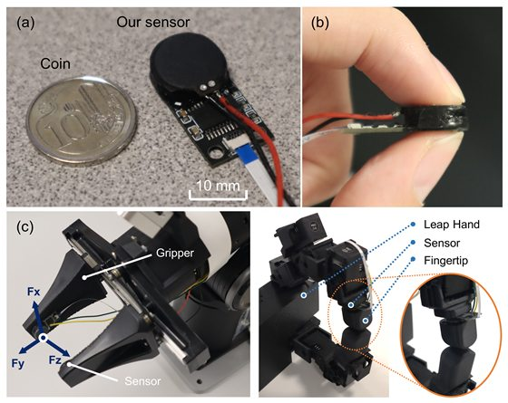
arXivLumiTac: Compact, High-Rate Six-Axis Optical Tactile Sensing for Human-Robot Interaction
arXiv preprint arXiv:2611.05936 (2026)
-
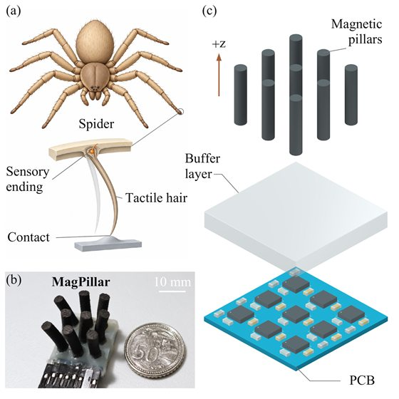
arXivMagPillar: A Soft Magnetopillar Array Tactile Sensor for Robotic Surface Perception
arXiv preprint arXiv:2611.01609 (2026)
-
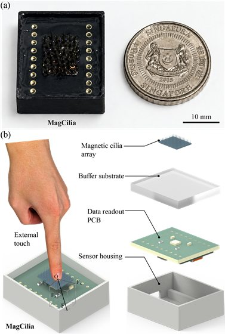
arXivMagCilia: A Compact Magnetociliary Tactile Sensor with 3D Force Sensing for Robotic Contact Perception and Grasping Feedback
arXiv preprint arXiv:2610.09536 (2026)
-
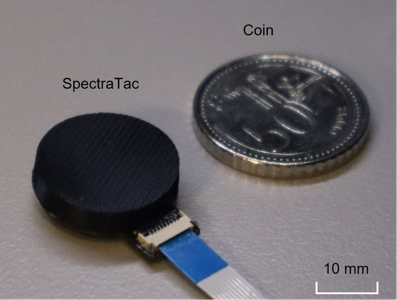
arXivSpectraTac: A Compact Camera-Free Optical Tactile Sensor with Distributed Color Sensing
IEEE International Conference on Advanced Sensing for Embodied Perception and Physical AI (IEEE-EPIC 2026), accepted
-
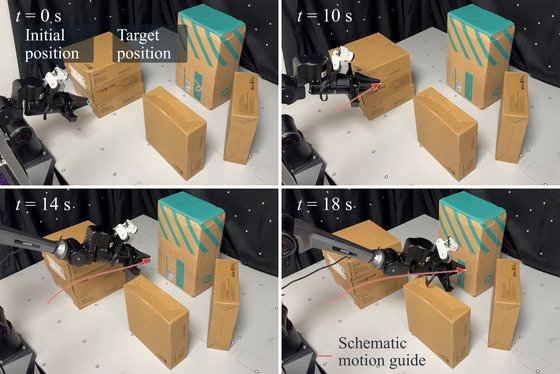
arXivLARC: Lazy Adaptive Reachability Certification of Robot Manipulator Trajectories
IEEE International Conference on Advanced Sensing for Embodied Perception and Physical AI (IEEE-EPIC 2026), accepted
-
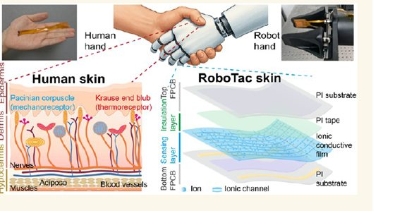
DOIIntrinsic Force–Temperature Self-Decoupling Enables Human-like Tactile Sensing in a Soft Ionic Skin
ACS Nano 20(31), 22195–22214 (2026)
-
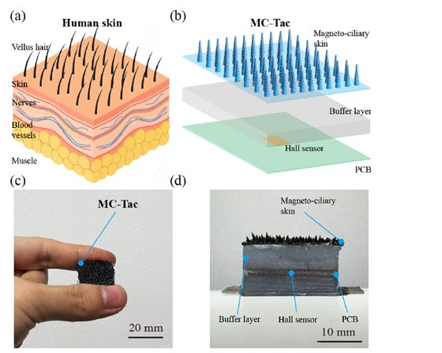
DOIA Bioinspired Soft Magnetociliary Tactile Sensor for Direction-Sensitive Interaction Sensing
IEEE Transactions on Instrumentation and Measurement 75, 9531313 (2026)
-
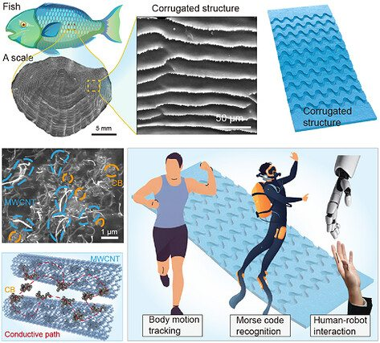
DOIBioinspired Sinusoidal Corrugation for High-Performance Motion Sensing in Wearable Human-Machine Interfaces
Advanced Sensor Research 5(9), e70167 (2026)
-
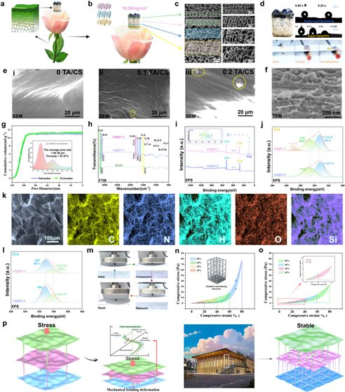
DOIBioinspired self-assembled gradient Janus bilayer aerogel enabling coupled solar desalination and purification of multicomponent oily emulsions
Chemical Engineering Journal 541, 177567 (2026)
-
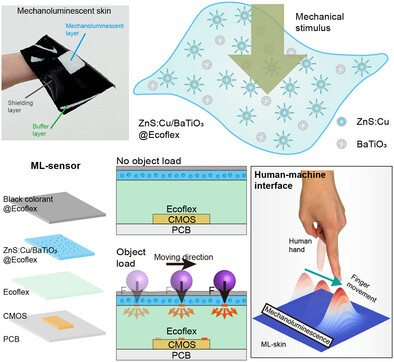
DOIA Soft Mechanoluminescent Skin for High-Resolution Optical Tactile Sensing in Human–Machine Interaction
Advanced Science 13(42), e75507 (2026)
-
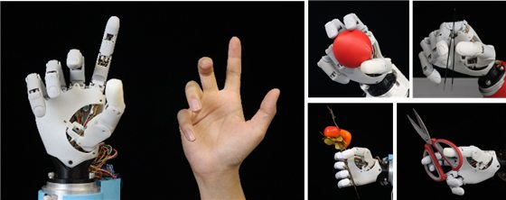
arXivDexLink Hand: A Compact, Affordable, 16-DOF Linkage-Driven Hand with Human-Like Dexterity
arXiv preprint arXiv:2606.17418 (2026)
-
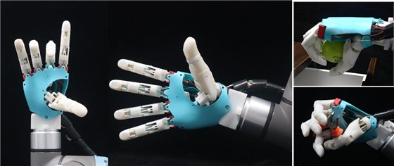
arXivSyLink Hand: A Synergy-Inspired Linkage-Driven Anthropomorphic Hand for Human-Like Dexterity
arXiv preprint arXiv:2606.14250 (2026)
-
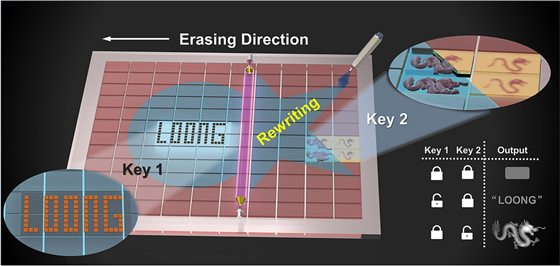
DOITunable Optical Metamaterial Enables Steganography, Rewriting, and Multilevel Information Storage
Nano-Micro Letters 18(1), 58 (2026)
-
TechRxiv
TKDCoach: A Jerk-Aware IoT System for Human Activity and Skill Level Recognition via Large Language Models
TechRxiv preprint (2026)
2025
-
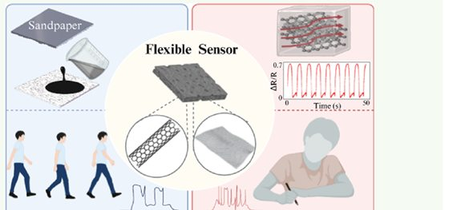
DOIDual-Sided Microstructured rGO–CNT Flexible Sensors for High-Sensitivity and Wide-Range Pressure Detection
ACS Applied Electronic Materials 7(8), 3244–3254 (2025)
-
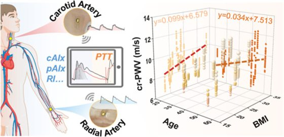
DOITactile-Transparent Wearable Sensor for Clinician-Friendly Pulse Wave Velocity Monitoring and Cardiovascular Risk Profiling
ACS Nano 19(36), 32822–32835 (2025)
2024
-
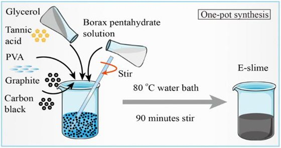
DOIAn Electronic Slime-Based Epidermal Electrode Using Carbon Nanocomposites for Biosignal Sensing
IEEE Open Journal of Nanotechnology 5, 156–162 (2024)
-
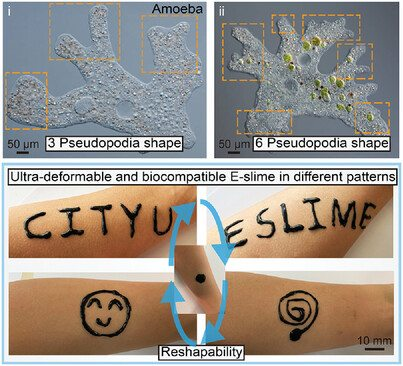
DOIAmoeba-Inspired Self-Healing Electronic Slime for Adaptable, Durable Epidermal Wearable Electronics
Advanced Functional Materials 34(37), 2402393 (2024)
-
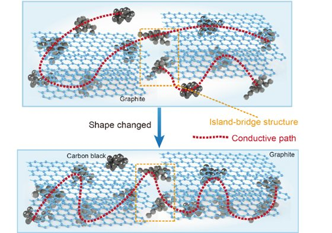
DOIEnhancing Robotic Hand Control with Electronic Slime-Based Flexible Finger Joint Motion Sensor
International Conference on Intelligent Robotics and Applications (ICIRA), pp. 388–399 (2024 conference, 2025 proceedings)
Best Student Paper Finalist
-
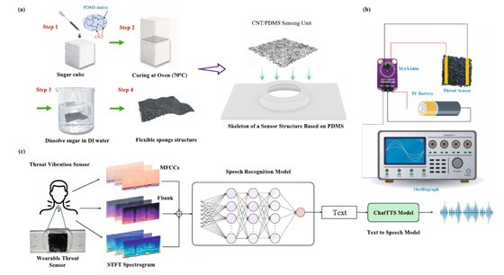
DOIAdvancing Human-Machine Interaction Using Intelligent Wearable Acoustic Sensors in Noisy Environments
International Conference on Intelligent Robotics and Applications (ICIRA), pp. 409–421 (2024 conference, 2025 proceedings)
-
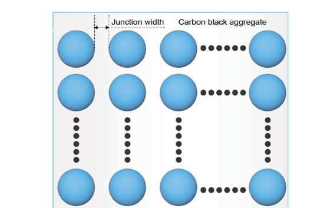
DOIConductivity Analysis of Carbon Black and Graphite Composites based on Percolation Theory
2024 IEEE 3rd International Conference on Micro/Nano Sensors for AI, Healthcare, and Robotics (NSENS), pp. 120–123 (2024)
2022
-
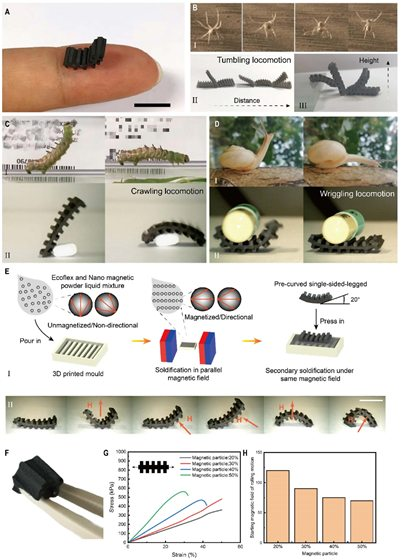
DOIAn Insect-Inspired Terrains-Adaptive Soft Millirobot with Multimodal Locomotion and Transportation Capability
Micromachines 13(10), 1578 (2022)
-
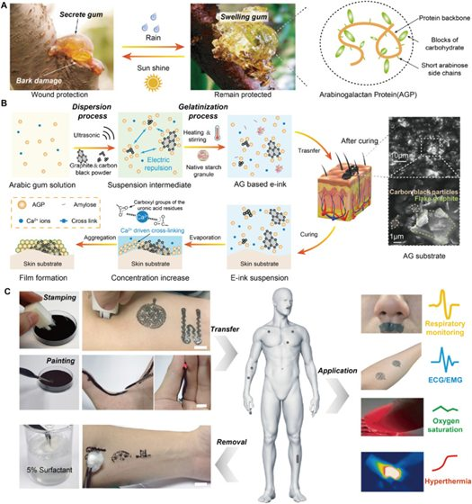
DOINatural gum-based electronic ink with water-proofing self-healing and easy-cleaning properties for directly on-skin electronics
Biosensors and Bioelectronics 214, 114547 (2022)
-
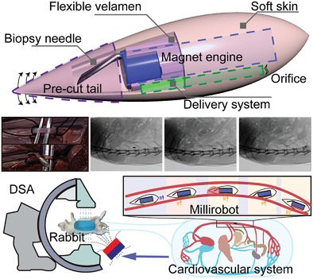
DOIFunctionalized Spiral-Rolling Millirobot for Upstream Swimming in Blood Vessel
Advanced Science 9(16), 2200342 (2022)
-
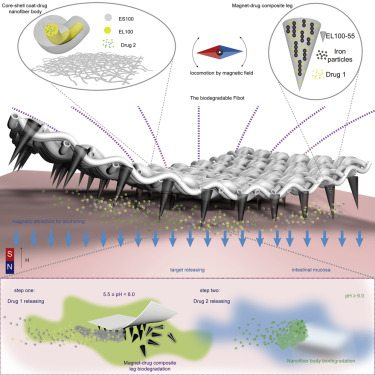
DOINanofiber-based biodegradable millirobot with controllable anchoring and adaptive stepwise release functions
Matter 5(4), 1277–1295 (2022)
2020
-
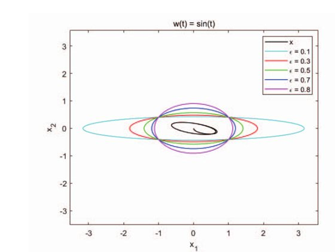
DOIReachable set synthesis of singular systems
2020 Chinese Control and Decision Conference (CCDC), pp. 1086–1091 (2020)